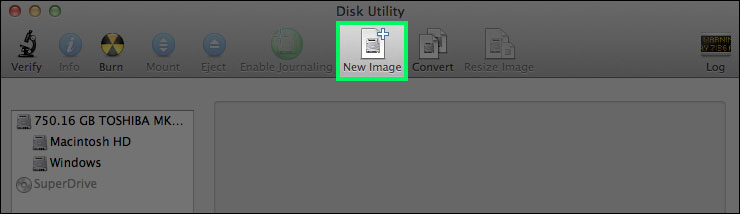
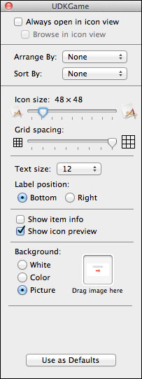
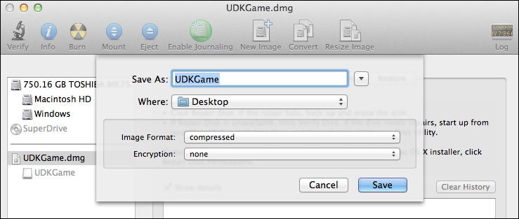

UDN
Search public documentation:
MacInstallerKR
English Translation
日本語訳
中国翻译
Interested in the Unreal Engine?
Visit the Unreal Technology site.
Looking for jobs and company info?
Check out the Epic games site.
Questions about support via UDN?
Contact the UDN Staff
日本語訳
中国翻译
Interested in the Unreal Engine?
Visit the Unreal Technology site.
Looking for jobs and company info?
Check out the Epic games site.
Questions about support via UDN?
Contact the UDN Staff
드래그 앤 드롭 인스톨러
문서 변경내역: Jeff Wilson 작성. 홍성진 번역.
개요
요구사항
/Applications/Utilities 에 설치되는) Disk Utility 앱과 아울러 애픽의 Developer Tools 가 설치되어 있어야 합니다. 인스톨러 배경 이미지도 만드는 것이 좋을 것입니다.
인스톨러 준비하기

쓰기가능 디스크 이미지 만들기
-
/Applications/Utilities에서 Disk Utility 앱을 열고 툴바에서 New Image 버튼을 누릅니다.

- 새로운 이미지 프로퍼티와 함께 창이 열립니다. 이름을 입력하고, 게임 크기를 넉넉하게 선택한 후, Partitions 드롭박스에서 Single partition - Apple Partition Map 를 선택합니다. 그리고 Create 버튼을 누릅니다.

- Disk Utility 가 새 디스크 이미지를 만들고 마운트(mount)합니다.
배경 이미지
- Finder 에서 새로이 마운트한 볼륨을 열고, 그 안에
Background라는 폴더를 만듭니다. 그리고 배경 이미지를 이 Background 폴더에 복사합니다.

- 이제 창에서 Finder 에 마운트한 볼륨이 선택되어 있는지, 아이콘 뷰 모드인지 확인한 다음, Command + J 키를 눌러 창의 프로퍼티를 엽니다.

- 창의 Background 부분에서 Picture 를 선택하고, 배경 이미지를 이미지 영역에 끌어 놓습니다. 주요 창에 배경 그림이 올바르게 표시될 것입니다.
- Background 폴더를 숨기려면, Terminal 앱을 열고 다음 명령을 사용해야 합니다: 우리의 경우에는:
/Developer/Tools/SetFile -a V /Volumes/Your_Volume_Name/background
/Developer/Tools/SetFile -a V /Volumes/UDKGame/background
게임과 어플리케이션 아이콘
- 게임을 인스톨러의 마운트한 볼륨에 끌어 놓습니다. 그런 다음 Finder 에서 스타트업 디스크를 열고
Applications폴더로의 alias 를 만듭니다:- 폴더를 선택합니다.
- File 메뉴에서 Make Alias 를 선택합니다. 그러면 Application alias 파일이 생깁니다.
- 이 파일을 인스톨러의 볼륨으로 끌어 놓고 "Applications" 로 이름을 바꿉니다.
- 이제 창의 프로퍼티를 한 번 더 열고 (Command + J), Icons Size 를 원하는 대로 조절한 다음, 배경 이미지에 맞도록 아이콘 위치와 창 크기를 조절합니다.
디스크 이미지 아이콘
- 디스크 이미지 아이콘을 바꾸기 위해서는, 데스크탑에서 마운트한 볼륨 아이콘을 선택하고 Command + I 키를 눌러 인포 창을 엽니다. 게임의 아이콘에도 같은 작업을 해 줍니다.

- 새로 열린 인포 창의 게임 아이콘을 클릭하여 선택하고 Command + C 를 눌러 복사합니다.
- 볼륨의 인포 창으로 전환하고, 거기서 아이콘을 선택한 다음 Command + V 를 눌러 붙여넣습니다.
- 마운트한 볼륨 아이콘이 게임과 같아질 것입니다.
디스크 이미지 변환하기
- Disk Utility 로 돌아와서, 인스톨러의 디스크 이미지 마운트를 해제(unmount)한 다음, 디스크 이미지를 선택한 상태로 Convert 버튼을 누릅니다. Compressed Image Format 을 선택했는지 확인한 다음 Save 를 누릅니다. 압축된 이미지에 다른 이름을 사용하도록 하지 않은 경우, 예전 파일을 대치하겠냐는 확인창이 뜹니다.

- 다 됐습니다. Disk Utility 의 변환 작업이 끝나면, 배포용 드래그 앤 드롭 인스톨러가 이쁘게 생깁니다.
내려받기
- 예제 배경 이미지 background.png 내려받기.